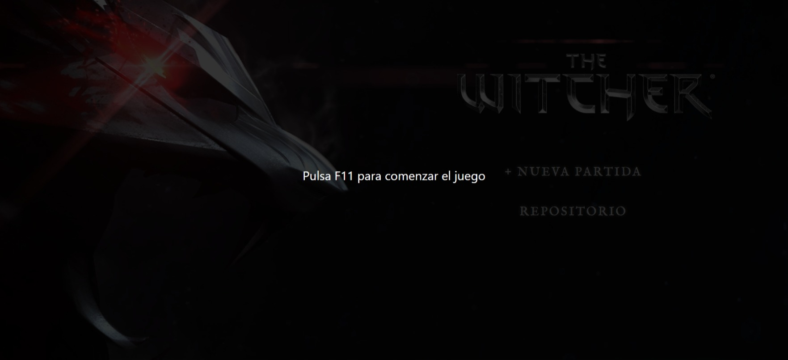
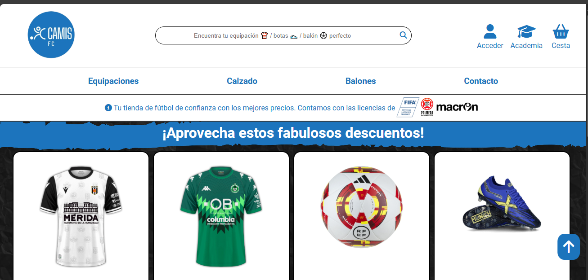
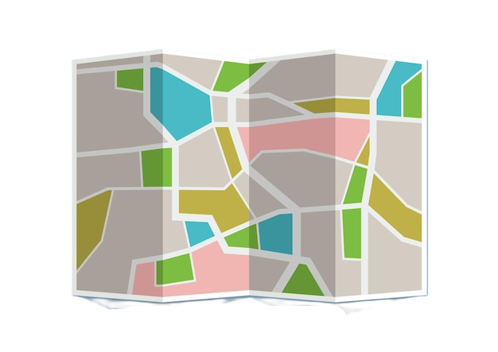

<section id="proyectos" class="proyectos">
  <h1>Proyectos</h1>

  <div class="tablero-wrap">
    
    <button class="btn-anterior" (click)="retrasarProyecto()"><mat-icon>arrow_left</mat-icon></button>
    <button class="btn-siguiente" (click)="avanzarProyecto()"><mat-icon>arrow_right</mat-icon></button>

    <div class="postit">
      <h2 class="titulo-evidencias">Evidencias encontradas</h2>
      <a
        [href]="proyectos[indiceProyecto()]['url']"
        target="_blank"
      >
        <mat-card appearance="outlined" class="postit-card">
          <mat-card-content>
            <h3>{{ proyectos[indiceProyecto()]["titulo"] }}</h3>
            <p>{{ proyectos[indiceProyecto()]["descripcion"] }}</p>
            
            <br>
             <b>Tecnologías:</b>
            <div class="tecnologias">
             
              @for(tecnologia of proyectos[indiceProyecto()]["tecnologias"]; track tecnologia.tecnologia){
                <mat-chip-set aria-label="Tecnologías">
                    <mat-chip>
                  
                  <p>{{ tecnologia.tecnologia }}</p>
                </mat-chip>
                </mat-chip-set>
              }
            </div>
          </mat-card-content>
        </mat-card>
      </a>
      <!-- <a
          href="https://github.com/dmunozc04-albarregas/videojuego"
          target="_blank"
        >
          <mat-card appearance="outlined" class="postit-card">
            <mat-card-content>
              <h3>The Witcher en JS</h3>
              <p>Desarrollo de una versión más simple The Witcher en JS</p>
              
            </mat-card-content>
          </mat-card>
        </a>
        <a
          href="https://github.com/dmunozc04-albarregas/videojuego-java-eva-david-java-fx"
          target="_blank"
        >
          <mat-card appearance="outlined" class="postit-card">
            <mat-card-content>
              <h3>Videojuego en Java FX</h3>
              <p>
                Pequeño videojuego de laberinto desarrollado con Java y Java FX
              </p>
              
            </mat-card-content>
          </mat-card>
        </a> -->
    </div>

    <!-- <div class="postits-row">
        <a
          href="https://github.com/dmunozc04-albarregas/Camis-F.C"
          target="_blank"
        >
          <mat-card appearance="outlined" class="postit-card">
            <mat-card-content>
              <h3>Camis-F.C</h3>
              <p>
                Web que trata sobre una web de venta de camisetas de 1º RFEF.
                Proyecto hecho para la asigntura de Lenguaje de Marcas
              </p>
              
            </mat-card-content>
          </mat-card>
        </a>

        <mat-card appearance="outlined" class="postit-card">
          <mat-card-content>
            <h3>Spotify</h3>
            <p>
              Spotify propio desarrollado en Androd Stuio con conexión a API
              real de música.
            </p>
          </mat-card-content>
        </mat-card>

        <mat-card appearance="outlined" class="postit-card">
          <mat-card-content>
            <h3>Web del Santuario de Chandavila</h3>
            <p>Desarrollo desde 0 de la página web del Santuario</p>
          </mat-card-content>
        </mat-card>
      </div> -->
  </div>

  <div class="zona-investigacion">
    
    
    
    
    
  </div>
</section>
